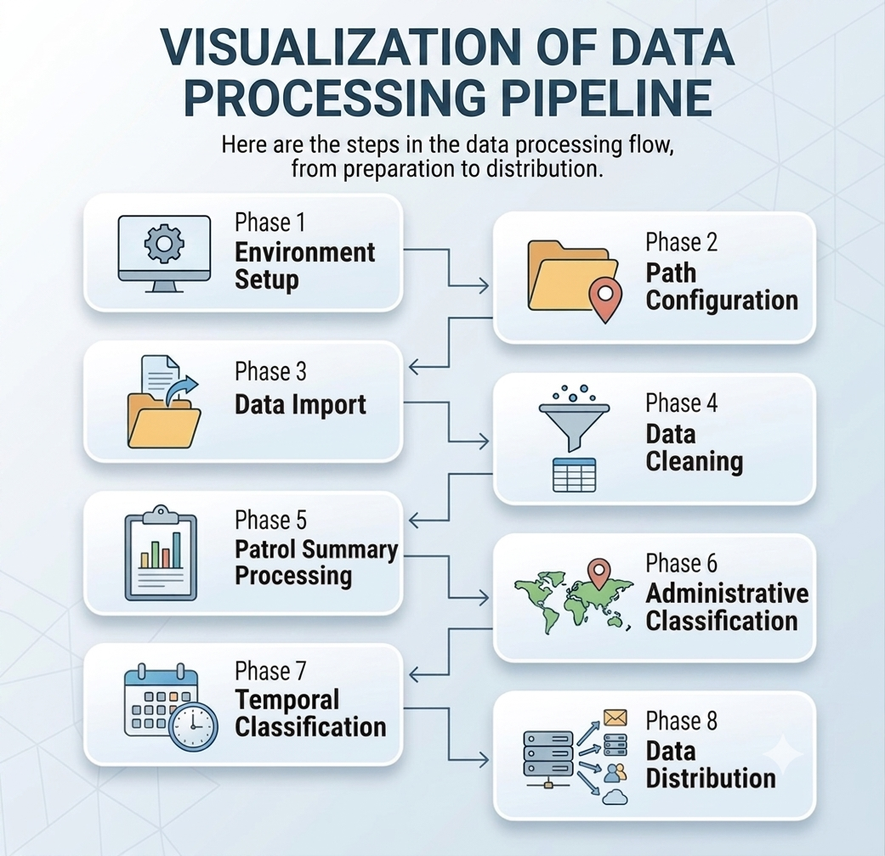

Many conservation teams already collect monitoring data, but their reporting process is still fragile. The same values are copied between spreadsheets, charts are rebuilt manually, and the final report narrative depends too much on memory and last-minute interpretation. A good automation workflow does not replace MEL judgment. It creates a reliable analytical backbone so that teams can spend less time formatting outputs and more time discussing what the evidence means for management, learning, and adaptation.

What this article gives you
- A practical data structure for MEL automation in conservation programs
- A full end-to-end R script that can be adapted to real reporting workflows
- A modular explanation of each analytical step, from QA to charts and narrative summaries
- An example quarterly report narrative that teams can adapt directly
In the first article of this MEL series, I argued that MEL matters when it informs decisions rather than simply satisfying reporting requirements. In the second article, I focused on how to design a practical MEL framework with a Theory of Change, a usable indicator matrix, and a learning loop. This third article takes the next step: how to operationalize that framework in a reproducible workflow using R so that the same logic can support monthly reviews, quarterly reports, dashboards, donor submissions, and adaptive management discussions.
1. What a production-ready MEL automation system should do
The purpose of MEL automation is not to produce a flashy dashboard. Its real purpose is to standardize how evidence is prepared, checked, summarized, and translated into management questions. A production-ready reporting workflow should therefore meet at least five conditions: it should be transparent, reproducible, auditable, decision-oriented, and easy for another analyst to maintain.[1][2]
In practical terms, that means you want one pipeline that can answer recurring questions such as: Are outputs being delivered as planned? Are outcome indicators moving in the expected direction? Which sites are underperforming? Which reporting values are still provisional? Which findings deserve management attention this quarter?
Once a workflow is structured this way, the same source tables can feed multiple outputs at the same time: an internal dashboard, a quarterly performance memo, a donor report annex, or a management-review slide deck. The gain is not only efficiency. It is consistency. When all those products are derived from the same analytical layer, teams spend less time reconciling contradictory numbers and more time interpreting what the numbers imply.
2. Start with a reporting data model, not with a dashboard
Most MEL automation problems are data-model problems in disguise. If the underlying table mixes outputs, outcomes, and metadata inconsistently, no amount of plotting or dashboard styling will make the system robust. A reporting-friendly MEL dataset should therefore be tidy enough that each row represents one observed or aggregated measurement and each column carries a stable analytical meaning.[3]
At minimum, your working table should allow you to identify the reporting period, site, indicator, result level, unit, value, target, source system, and QA status. That structure supports filtering, comparison, and validation without forcing the analyst to rewrite logic for every reporting cycle.
| reporting_period | site | indicator | result_level | value | target | source | qa_status |
|---|---|---|---|---|---|---|---|
| 2026-Q1 | Block A | patrol_days | output | 24 | 20 | SMART | verified |
| 2026-Q1 | Block A | threat_incidents | outcome | 7 | 6 | SMART | verified |
| 2026-Q1 | Block A | patrol_coverage | outcome | 0.82 | 0.85 | SMART spatial | verified |
Recommended minimum fields
Required: reporting_period, observation_date, site, indicator, result_level, unit, value, target, source, qa_status
Helpful additions: geography, implementing_partner, donor, disaggregation, narrative_note, data_owner, and last_validated_at
3. Use a simple project structure that survives staff turnover
A reporting pipeline is easier to sustain when the project structure is predictable. This matters in conservation organizations where MEL responsibilities often move between field coordinators, analysts, consultants, and program managers. Folder discipline is therefore part of analytical quality, not a cosmetic preference.
mel-reporting/
data-raw/
mel_indicator_data.csv
data-processed/
outputs/
figures/
tables/
narrative/
reports/
quarterly_report.qmd
scripts/
01_build_mel_pipeline.R
config/
reporting_config.csvThis layout separates raw inputs, processed outputs, reusable scripts, and reporting documents. If you later move from a single script to a fuller workflow manager, the logic is already organized well enough to scale.
4. Full end-to-end R script
The script below is intentionally written as a complete example rather than a minimal code fragment. It reads a source file, standardizes the fields, applies basic validation, calculates indicator performance, produces charts, generates narrative-ready summaries, and saves reusable outputs for a Quarto report. You will still adapt the indicator names, thresholds, and file paths to your own program, but the structure is directly reusable.
Companion files
You can open the companion script here: 01_build_mel_pipeline.R
You can also start from the input template here: mel_indicator_data_template.csv
library(tidyverse)
library(janitor)
library(lubridate)
library(glue)
library(scales)
dir.create("data-processed", showWarnings = FALSE, recursive = TRUE)
dir.create("outputs", showWarnings = FALSE, recursive = TRUE)
dir.create("outputs/figures", showWarnings = FALSE, recursive = TRUE)
dir.create("outputs/tables", showWarnings = FALSE, recursive = TRUE)
dir.create("outputs/narrative", showWarnings = FALSE, recursive = TRUE)
reporting_period_selected <- "2026-Q1"
priority_sites <- c("Block A", "Block B", "Block C")
mel_raw <- read_csv("data-raw/mel_indicator_data.csv", show_col_types = FALSE) |>
clean_names()
required_cols <- c(
"reporting_period", "observation_date", "site", "indicator",
"result_level", "unit", "value", "target", "source", "qa_status"
)
missing_cols <- setdiff(required_cols, names(mel_raw))
if (length(missing_cols) > 0) {
stop(glue("Missing required columns: {toString(missing_cols)}"))
}
mel_clean <- mel_raw |>
mutate(
observation_date = ymd(observation_date),
reporting_period = str_trim(reporting_period),
site = str_squish(site),
indicator = str_to_lower(str_replace_all(indicator, " ", "_")),
result_level = str_to_lower(result_level),
source = str_squish(source),
qa_status = str_to_lower(qa_status),
value = as.numeric(value),
target = as.numeric(target)
)
qa_missing_core <- mel_clean |>
filter(
is.na(reporting_period) |
is.na(observation_date) |
is.na(site) |
is.na(indicator) |
is.na(value)
) |>
mutate(issue_type = "missing_core_fields")
qa_invalid_status <- mel_clean |>
filter(!qa_status %in% c("verified", "provisional", "rejected")) |>
mutate(issue_type = "invalid_qa_status")
qa_duplicate_rows <- mel_clean |>
count(reporting_period, site, indicator, observation_date, name = "n") |>
filter(n > 1) |>
mutate(issue_type = "possible_duplicate")
qa_negative_values <- mel_clean |>
filter(value < 0) |>
mutate(issue_type = "negative_value")
qa_priority_sites_missing <- crossing(
reporting_period = reporting_period_selected,
site = priority_sites
) |>
anti_join(
mel_clean |>
filter(reporting_period == reporting_period_selected) |>
distinct(reporting_period, site),
by = c("reporting_period", "site")
) |>
mutate(issue_type = "missing_priority_site_data")
qa_summary <- bind_rows(
qa_missing_core |> select(any_of(required_cols), issue_type),
qa_invalid_status |> select(any_of(required_cols), issue_type),
qa_negative_values |> select(any_of(required_cols), issue_type),
qa_duplicate_rows,
qa_priority_sites_missing
) |>
mutate(review_flag = "check")
write_csv(qa_summary, "outputs/tables/qa_issues.csv")
mel_verified <- mel_clean |>
filter(qa_status == "verified")
indicator_summary <- mel_verified |>
group_by(reporting_period, site, indicator, result_level, unit) |>
summarise(
value = sum(value, na.rm = TRUE),
target = if (all(is.na(target))) NA_real_ else max(target, na.rm = TRUE),
.groups = "drop"
) |>
mutate(
performance_ratio = if_else(!is.na(target) & target != 0, value / target, NA_real_),
performance_status = case_when(
is.na(performance_ratio) ~ "no_target",
performance_ratio >= 1 ~ "on_track",
performance_ratio >= 0.8 ~ "watch",
TRUE ~ "off_track"
)
)
write_csv(indicator_summary, "data-processed/indicator_summary.csv")
period_overview <- indicator_summary |>
filter(reporting_period == reporting_period_selected) |>
summarise(
indicators_reported = n_distinct(indicator),
sites_reported = n_distinct(site),
on_track_count = sum(performance_status == "on_track", na.rm = TRUE),
watch_count = sum(performance_status == "watch", na.rm = TRUE),
off_track_count = sum(performance_status == "off_track", na.rm = TRUE)
)
site_scorecard <- indicator_summary |>
filter(reporting_period == reporting_period_selected) |>
group_by(site) |>
summarise(
indicators_reported = n(),
pct_on_track = mean(performance_status == "on_track", na.rm = TRUE),
pct_off_track = mean(performance_status == "off_track", na.rm = TRUE),
.groups = "drop"
) |>
arrange(desc(pct_off_track))
write_csv(site_scorecard, "outputs/tables/site_scorecard.csv")
priority_indicator_table <- indicator_summary |>
filter(
reporting_period == reporting_period_selected,
indicator %in% c("patrol_days", "patrol_coverage", "threat_incidents", "community_meetings")
) |>
arrange(indicator, site)
write_csv(priority_indicator_table, "outputs/tables/priority_indicator_table.csv")
trend_data <- indicator_summary |>
filter(indicator %in% c("patrol_coverage", "threat_incidents"))
p_trend <- ggplot(
trend_data,
aes(x = reporting_period, y = value, group = site, color = site)
) +
geom_line(linewidth = 1) +
geom_point(size = 2) +
facet_wrap(~ indicator, scales = "free_y") +
scale_color_brewer(palette = "Set2") +
labs(
title = "Selected MEL Indicator Trends",
x = "Reporting period",
y = "Indicator value",
color = "Site"
) +
theme_minimal(base_size = 11) +
theme(
legend.position = "bottom",
panel.grid.minor = element_blank()
)
ggsave(
filename = "outputs/figures/indicator_trends.png",
plot = p_trend,
width = 10,
height = 6,
dpi = 300
)
p_status <- indicator_summary |>
filter(reporting_period == reporting_period_selected) |>
count(performance_status) |>
ggplot(aes(x = performance_status, y = n, fill = performance_status)) +
geom_col(width = 0.7) +
scale_fill_manual(
values = c(
on_track = "#2c6e49",
watch = "#d9a441",
off_track = "#b94a48",
no_target = "#58748b"
)
) +
labs(
title = "Indicator performance status",
x = NULL,
y = "Number of indicator-site combinations"
) +
theme_minimal(base_size = 11) +
theme(legend.position = "none")
ggsave(
filename = "outputs/figures/performance_status.png",
plot = p_status,
width = 8,
height = 5,
dpi = 300
)
top_messages <- indicator_summary |>
filter(reporting_period == reporting_period_selected) |>
mutate(gap_to_target = target - value) |>
arrange(desc(gap_to_target)) |>
slice_head(n = 3) |>
transmute(
message = glue(
"{site}: {indicator} reached {round(value, 2)} against a target of {round(target, 2)} ",
"({performance_status})."
)
)
headline_text <- glue(
"{period_overview$indicators_reported} indicators were reported across ",
"{period_overview$sites_reported} sites in {reporting_period_selected}. ",
"{period_overview$on_track_count} indicator-site results were on track, ",
"{period_overview$watch_count} were in a watch zone, and ",
"{period_overview$off_track_count} were off track."
)
management_note <- glue(
"Sites with the highest share of off-track indicators were: ",
"{toString(site_scorecard$site[1:min(3, nrow(site_scorecard))])}. ",
"These sites should be prioritized for a management review."
)
narrative_lines <- c(
glue("Quarterly MEL summary for {reporting_period_selected}"),
headline_text,
management_note,
"Priority findings:",
paste0("- ", top_messages$message)
)
write_lines(narrative_lines, "outputs/narrative/quarterly_summary.txt")
write_csv(period_overview, "outputs/tables/period_overview.csv")
message(glue("Pipeline completed for {reporting_period_selected}"))This script is intentionally linear so that a practitioner can run it, inspect the outputs, and understand the dependency between stages. In a more mature analytics environment, you might separate these tasks into functions or a workflow tool such as targets, but for many conservation teams a transparent single-file script is a better starting point because it is easier to teach, audit, and hand over.
5. Modular walkthrough of the full script
Because you asked for both a full script and modular readability, the next sections unpack the exact logic of the script above. The important idea is that every module answers a different reporting need, and each output becomes an input to the next layer of reporting.
5.1 Import and standardize
The first module makes the data analytically stable. It cleans names, standardizes text values, parses dates, and confirms that the essential columns exist. This is basic, but it is the difference between a reporting system that behaves predictably and one that breaks every quarter because someone renamed a field in Excel.
mel_raw <- read_csv("data-raw/mel_indicator_data.csv", show_col_types = FALSE) |>
clean_names()
mel_clean <- mel_raw |>
mutate(
observation_date = ymd(observation_date),
reporting_period = str_trim(reporting_period),
site = str_squish(site),
indicator = str_to_lower(str_replace_all(indicator, " ", "_")),
qa_status = str_to_lower(qa_status)
)5.2 Run QA checks before calculating anything
A common MEL mistake is to calculate beautifully formatted indicator summaries before asking whether the raw values are complete, unique, and valid. Automated QA prevents that problem by generating a review table before the reporting numbers are finalized. In conservation reporting, the most important checks are usually missing identifiers, duplicate entries, impossible values, and incomplete coverage in priority geographies.
qa_invalid_status <- mel_clean |>
filter(!qa_status %in% c("verified", "provisional", "rejected")) |>
mutate(issue_type = "invalid_qa_status")
qa_negative_values <- mel_clean |>
filter(value < 0) |>
mutate(issue_type = "negative_value")By writing QA findings to a dedicated output file, the analyst creates a review trail. This is especially useful in teams where a MEL analyst and a program manager need to resolve issues together before a donor-facing report is finalized.
5.3 Build the indicator summary table
The indicator summary table is the core analytical product. It should be reusable across multiple outputs and stable enough that the same table can feed a dashboard, a narrative report, and an annex. That is why the script calculates a performance ratio and a simple status classification. The reporting conversation rarely starts with raw values alone. It starts with whether a result is on track, needs attention, or is clearly off track.
indicator_summary <- mel_verified |>
group_by(reporting_period, site, indicator, result_level, unit) |>
summarise(
value = sum(value, na.rm = TRUE),
target = max(target, na.rm = TRUE),
.groups = "drop"
) |>
mutate(
performance_ratio = if_else(!is.na(target) & target != 0, value / target, NA_real_),
performance_status = case_when(
performance_ratio >= 1 ~ "on_track",
performance_ratio >= 0.8 ~ "watch",
TRUE ~ "off_track"
)
)5.4 Create dashboard-ready outputs
Rather than building the dashboard directly from raw data, the workflow saves structured intermediate products such as a site scorecard, a priority-indicator table, and a trend table. This makes the dashboard lighter, easier to debug, and easier to update when the visual layout changes later. It also means that if a chart looks wrong, you can inspect the intermediate CSV first instead of reverse-engineering the whole pipeline.
5.5 Generate narrative-ready text objects
This is where reporting automation becomes genuinely valuable. The script does not try to write a full report by itself. Instead, it drafts a first layer of narrative text: the reporting headline, the management note, and priority findings. That approach keeps human interpretation in the loop while still reducing repetitive writing.
headline_text <- glue(
"{period_overview$indicators_reported} indicators were reported across ",
"{period_overview$sites_reported} sites in {reporting_period_selected}."
)
management_note <- glue(
"Sites with the highest share of off-track indicators were: ",
"{toString(site_scorecard$site[1:min(3, nrow(site_scorecard))])}."
)6. Build dashboards that answer management questions
A MEL dashboard should not be designed around what is visually interesting. It should be designed around what the management team repeatedly needs to know. In a conservation program, that often means combining implementation progress, outcome signals, data quality, and site-level exceptions in one place rather than scattering them across separate files.[4][5]
Delivery
Are outputs such as patrol days, meetings, or trainings being delivered as planned?
Outcome Signals
Are coverage, threat, ecological, or participation indicators moving in the desired direction?
Data Quality
How much of the reporting dataset is verified, provisional, duplicated, or still under review?
Management Attention
Which sites or indicators require discussion, corrective action, or a revised strategy?
The dashboard should make the next review meeting easier, not replace the review meeting. If a panel does not support a recurring decision, it probably does not need to be there.
7. Render reports from the same analytical layer
This is where Quarto or R Markdown becomes especially powerful. The same processed tables and figures generated by the pipeline can feed a quarterly report template. That means the report is not a separate manual product. It becomes a rendered interpretation layer built on top of validated data.[6][7]
That design creates traceability across outputs. A dashboard figure, a donor table, and a narrative paragraph can all point back to the same underlying processed dataset. This makes discrepancies easier to catch and gives the reporting workflow a much clearer audit trail.
8. Example quarterly report narrative
The strongest automation workflows do not stop at tables and charts. They also help the analyst structure the story of performance. Below is an example of the type of quarterly narrative that can be produced from the outputs generated by the script. This is not meant to be copied blindly. It is meant to show how indicator summaries can be translated into a management-facing report section.
Quarterly Performance Summary
Reporting period: 2026-Q1
During 2026-Q1, the MEL pipeline consolidated verified reporting data across three priority sites and four core indicators. Overall implementation remained active, with patrol effort exceeding target in two sites, but performance was uneven across outcome indicators. Patrol coverage in Block A reached 82 percent against an 85 percent target, suggesting that field presence remained high but still below the level expected for full spatial coverage. Threat incidents declined in Block B but remained above target in Block A, indicating that patrol effort alone may not yet be sufficient to shift the threat pattern in the highest-pressure area.
Of the indicator-site combinations reported this quarter, the majority were classified as on track or within a watch range, but a smaller group was clearly off track and requires management attention. The site scorecard shows that Block A recorded the highest share of off-track indicators, especially in threat-related results. This suggests a need to review patrol deployment strategy, intelligence use, and follow-up response mechanisms rather than simply increasing field effort.
From a learning perspective, the quarter highlights an important distinction between delivery and outcomes. Output indicators such as patrol days and community meetings were generally achieved, but outcome indicators showed slower movement. This pattern should trigger a management discussion about whether current activities are sufficiently targeted to influence the intended result. Recommended actions for the next quarter include prioritizing under-covered blocks, validating the spatial assumptions behind patrol routing, and conducting a focused review of recurring incident locations.
9. Minimum QA checks for a real reporting cycle
A polished dashboard is still misleading if the underlying data is inconsistent. Quality checks therefore belong inside the reporting pipeline, not in a separate ad hoc review that may or may not happen in time. The exact rules vary by program, but the minimum set should cover completeness, uniqueness, plausibility, and coverage.
Minimum QA checks
Completeness: missing site names, dates, indicators, units, or values
Uniqueness: duplicate observations for the same indicator, site, and date
Plausibility: negative values, impossible percentages, or unrecognized status labels
Coverage: no records for a priority site or reporting unit expected in the quarter
Governance: unverified rows still entering donor-facing summaries
10. Implementation checklist for conservation teams
- Define a stable indicator dictionary before writing code.
- Separate raw data, processed outputs, and report templates into distinct folders.
- Apply QA filters before calculating indicator summaries.
- Save intermediate tables so dashboard logic is inspectable and auditable.
- Use the same processed tables for charts, donor annexes, and narrative reporting.
- Review off-track indicators in a management meeting, not only in the final report.
- Document thresholds and target logic so future staff can maintain the workflow.
11. Final reflection
Automation does not do MEL for a program. It does something quieter and more useful: it reduces friction between data collection, analysis, reporting, and management discussion. In conservation settings, where teams often work across difficult geographies and with limited reporting time, that reduction in friction can be transformative. It means that more energy goes into asking whether a strategy is working and less energy goes into rebuilding the same tables each quarter.
The most successful MEL automation systems are rarely the most complicated ones. They are the ones that other people can understand, rerun, inspect, and trust. If your workflow can take one validated source dataset and turn it into dashboard outputs, report-ready tables, and a coherent quarterly narrative, then it is already doing the most important part of the job.
References
- Sandve, G. K., Nekrutenko, A., Taylor, J., and Hovig, E. 2013. Ten simple rules for reproducible computational research. PLoS Computational Biology, 9(10), e1003285.
- Bryan, J. 2018. Excuse me, do you have a moment to talk about version control? The American Statistician, 72(1), 20-27.
- Wickham, H., Cetinkaya-Rundel, M., and Grolemund, G. 2023. R for Data Science, 2nd ed. O'Reilly.
- Conservation Measures Partnership. 2020. Open Standards for the Practice of Conservation, Version 4.0.
- USAID. 2016. Collaborating, Learning, and Adapting Framework and Toolkit.
- Xie, Y., Dervieux, C., and Riederer, E. 2020. R Markdown Cookbook. Chapman and Hall/CRC.
- Quarto Development Team. 2026. Quarto. Available at: quarto.org.
- SMART Partnership. 2024. SMART for Conservation. Available at: smartconservationtools.org.